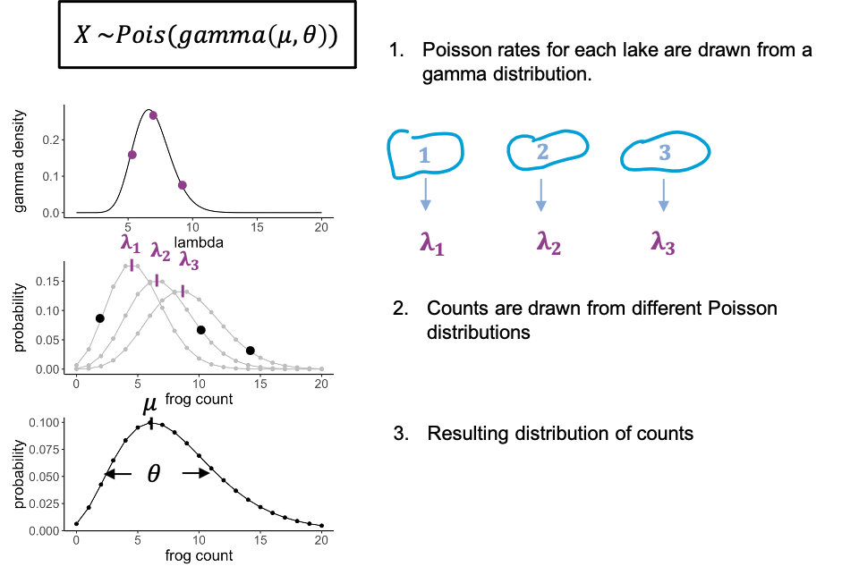

The Gamma-Poisson distribution
Last updated on 2023-11-21 | Edit this page
Estimated time: 14 minutes
Overview
Questions
- What is the Gamma-Poisson distribution?
- What kind of data is it used on?
Objectives
- Explain the Gamma-Poisson distribution and how it compares to the Poisson distribution.
- Further practice the use of probabilities and random numbers in R.
The Gamma Poisson distribution
In biology we often have the problem that the Poisson doesn’t fit very well, because the observed distribution is more spread out than expected for Poisson, that means the variance is larger than the mean.This is due to additional variation that we haven’t captured, or that we cannot control for.

To stay with the frogs counts – but this time each individual frog was caught from a different lake. And each lake has slightly different properties that affect the rate at which we can catch frogs in it. There might be more or less frogs in them, or better hiding places.
We can model this by saying that for each data point, the rate lambda is drawn from a distribution, in this case a gamma distribution. You don’t have to know anything about the gamma distribution, just that it has a bell shape, and thus gives us some average rate and a variance. What we then have is individual frog counts that all come from a slightly different Poisson distribution, so that the overall distribution will be more spread out than each single Poisson.
We call this a gamma-poisson distribution. It’s a poisson distribution where the rate \(\lambda\) for each data point was drawn from a gamma distribution. It has two parameters: the mean (average rate), and a scale parameter, which indicates how much the lambdas are spread.
Examples for usage:
- modelling gene expression data, because there is always biological variation between the samples, and we cannot measure where exactly it comes from
- modelling cell counts that come from slightly different volumes, or from different individuals.
The Gamma Poisson distribution in R
The Gamma Poisson distribution goes by two names: “Gamma Poisson” or
“negative binomial”. In R, its suffix is nbinom. To make
things more confusing, the Gamma Poisson can be parametrized in
different ways. This means, it is possible to describe the same
distribution with different combinations of parameters.
Above, I introduced a parametrization with
- mean \(\mu\) (the average Poisson
rate) and
- scale \(\theta\) (a measure for how much the Poisson rate varies between individual counts),
because I find it most intuitive. The argument mu in
dnbinom lets you define \(\mu\). The argument size is
the inverse of \(\theta\), that is for
a small size you will get a distribution with a large
overdispersion (=spread). For very large values of size,
the distribution will tend towards a Poisson distribution.
Compare Gamma poisson to the Poisson distribution
To demonstrate how the Gamma Poisson distribution differs from a Poisson, let’s compare the means and variances.
- Simulate 100 random frog counts with a Poisson rate of 4 then
calculate the mean.
- Simulate 100 random frog counts with a Poisson rate of 4, then
calculate the variance using the function
var. - Simulate 100 random frog counts from different lakes with a mean 4
and
size=2, then calculate the mean. - Simulate 100 random frog counts from different lakes with a mean of
4 and
size=2, then calculate the variance using the functionvar.
R
library(tidyverse)
# 1. Calculate the mean of a Poisson distribution
rpois(n=100, lambda = 4) %>% mean()
OUTPUT
[1] 4.13R
# 2. Calculate the variance
rpois(n=100, lambda = 4) %>% var()
OUTPUT
[1] 3.555152R
# 3. Gamma poisson mean
rnbinom(n=100, mu=4, size=2) %>% mean()
OUTPUT
[1] 4.14R
# 4. Gamma poisson variance
rnbinom(n=100, mu=4, size=2) %>%
var()
OUTPUT
[1] 10.75747